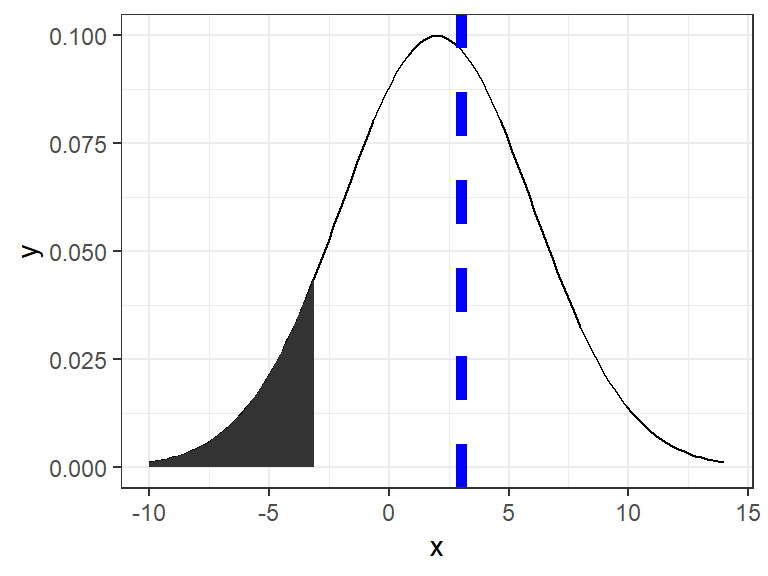

statsfoRdummies
Eryn Blagg, Gulzina Kuttubekova, Charlotte Roiger, Joe Zemmels
2019-04-27
Source:vignettes/statsfordummies.Rmd
statsfordummies.RmdWhile this vignette will show how the various functions within this package can be used from the console, the purpose of this package is mainly in-service to the shiny app that accompanies it. It is highly recommended to first launch the shiny app to follow along with this vignette. You can launch the app by running the following in your console.
shiny::runApp(appDir = "statsfoRdummies/inst/shiny")Joe
Last semester many of my STAT 101 students lacked an understanding of what they were doing when performing a hypothesis test. Many would simply memorized the procedure and formulas while lacking the intuition for how the procedure and formulas function. I remember frequently thinking that many students would gain a better understanding of, for example, why they reject null hypothesis when their \(z\)-statistic is far from 0 if they had an interactive, dynamic tool with which they could practice their hypothesis testing skills. This was the inspiration for part of my contribution to this project. I had the idea to create a visualization tool that students could use to graph a normal distribution density, specify a significance level and alternative distribution direction, and plot an observed \(z\)-statistic. I believed that having the ability to actually visualize the acceptance/rejection regions under a normal distribution density might lead to a deeper understanding than simply checking whether the \(p\)-value is less than .05.
plotNormal()
The function \(\texttt{plotNormal()}\) allows the user to graph a normal distribution density by specifying a mean and standard deviation as well as an observed value to be graphed as a blue vertical dotted line. It also lets the user specify the signficance level of their test, which will be visualized as a shaded region under the density curve, as well as the direction of their alternative hypothesis. While not possible to show in this vignette, the user can also indicate whether they want a ggplot object to be returned or a more interactive plotly object.
The intent of this function is to give the user a way to visually determine whether their observed value falls in the critical region. This function is used by itself in the “Normal Plot” tab of the shiny app, but I believe its most useful inclusion is in the “Hypothesis Test Challenge” tab.
plotNormal(mu=2,sigma=4,alpha=.1,obs=3,direction="<",plotly = FALSE)
Below is a snapshot of the usage of \(\texttt{plotNormal()}\) in the “Normal Plot” tab of the shiny app.